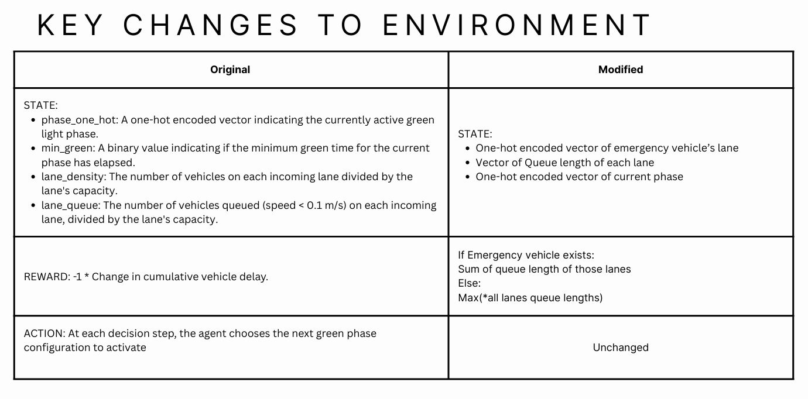

Designing an automated traffic signal control system that dynamically adjusts traffic lights based on real traffic flow, with a focused priority on minimizing wait times for emergency vehicles.
The main idea is to reduce the overall wait time for emergency vehicles traveling from one destination to another. To achieve this task, we used Reinforcement Learning to train a traffic signal controller in a simulated environment (SUMO-RL). We trained the agent with various algorithms (SARSA, Q-Learning, DQN, Double DQN, and A2C) and compared their performance.

The traffic light follows a static program with a fixed cycle: 42 seconds green for one direction (likely North-South based on connections), 2 seconds yellow, 42 seconds green for the other direction, and 2 seconds yellow.
[0-5 (Low 1), 5-10 (Low 2), 10-15 (High 1), 15-20 (High 2)].[0-3, 0-3, 0-3, 0-3, 0-3, 0-4] = 5120.-1 * max(n_t, w_t) or sum of queue lengths where emergency vehicles exist.-1 * max(n_t, w_t) or sum of queue lengths where emergency vehicles exist.Reward shaping was key. Only using the summation of queue length was not enough; the model began gaming the rewards by minimizing length for one lane while keeping the other lane full.
Simplifying phases helped significantly. Granular control on phases led to higher convergence times, and often it is unrealistic to keep only one lane open at a time.
We trained the model on shorter episode lengths to emphasize quicker model updates and then tested it on longer episodes. This showed us the fastest convergence.
Notice how the model learns to minimize the penalty by letting 1 lane wait indefinitely while keeping the other open.